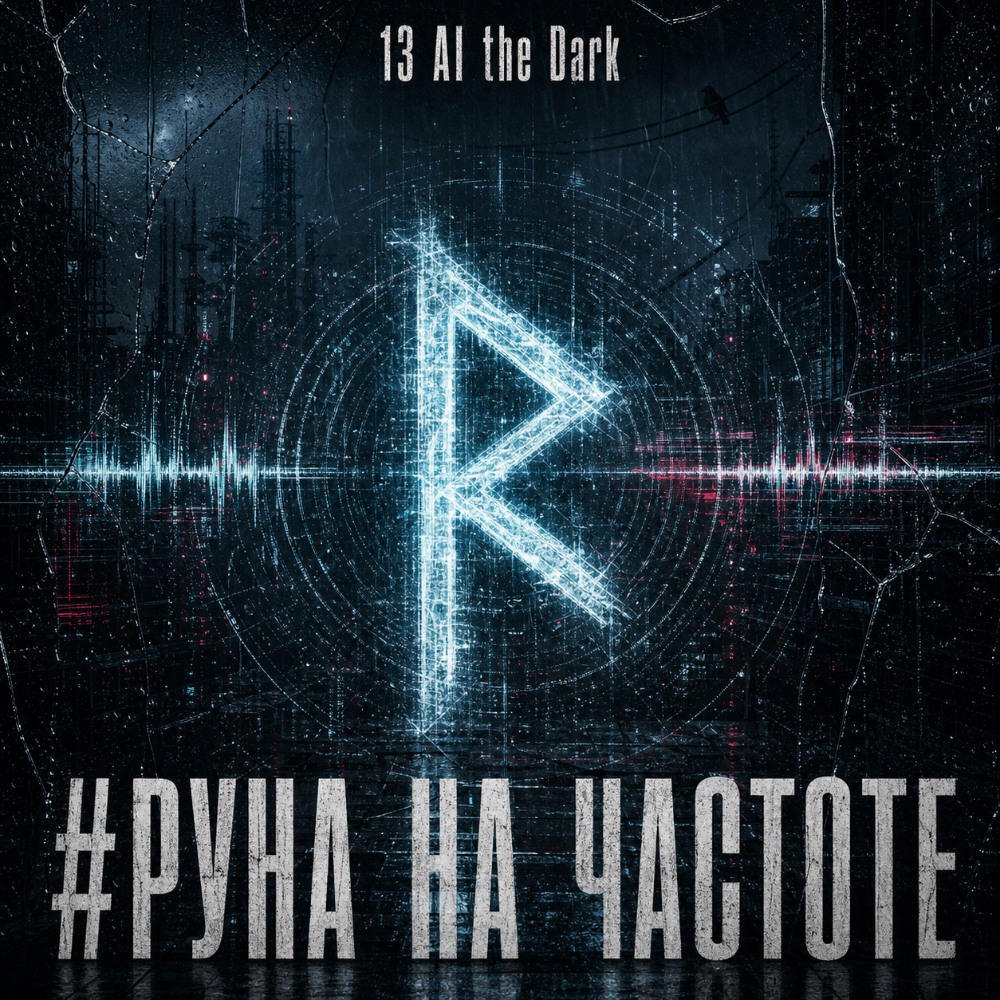
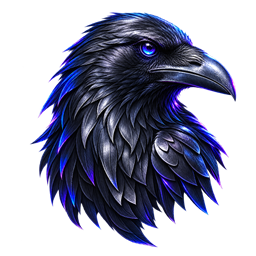

Новый релиз · 13 AI the Dark
#Руна на частоте
Древний знак оказался внутри современного сигнала.
Привычный шум вдруг складывается в ясный знак. Не голос из прошлого, а частота, на которой человек наконец слышит самого себя.

13 AI THE DARKArtS13Studio На главную13 AI the Dark
Отдельные истории собраны в синглах. Большая общая линия начинается с альбома «3 поколения» — пока это его техническое название.
Раздел 01 · отдельные истории
Самостоятельные и совместные релизы, которые живут как отдельные истории проекта.

Новый релиз · 13 AI the Dark
Древний знак оказался внутри современного сигнала.
Привычный шум вдруг складывается в ясный знак. Не голос из прошлого, а частота, на которой человек наконец слышит самого себя.

Первый шаг. Начало истории.
Трек о людях, которые продолжают собирать своё дело после ошибок и неудач. Пока в цехе горит свет и рядом остаются свои, история продолжается.

Скорость, выбор и точка невозврата.
Последний круг — момент, когда отступать уже поздно и остаётся закончить начатое. Скорость здесь становится проверкой выбора и характера.

Коллаборация с Custom23.
Трек о людях с разными характерами и дорогами, которые сходятся в одной точке. Он продолжил коллаборацию, начатую четырьмя эксклюзивными футболками для пилотов команды.
Раздел 02 · альбом
Техническое название
Семь историй о разных традициях, памяти и людях, которые не спорят за право быть главными, а создают общее дело.

Разные силы сходятся у порога старого цеха.
Через современный город проходят три мифологических шествия, и каждое проверяет людей по-своему. Они пришли не ради войны, а чтобы увидеть, осталось ли в человеке что-то настоящее.

Чужое лицо, старый цех и то, что остаётся за маской.
У мастерской появляется незнакомец с расколотой маской. Его не расспрашивают о прошлом — принимают по тому, что он делает рядом с другими.

Память о людях, оставивших своё имя в общей истории.
В мастерской оставляют свободные места для тех, кто когда-то был рядом. Разные традиции говорят о памяти по-своему, но чувство остаётся одним.
 В работе
В работе
Выбор начинается там, где заканчиваются чужие ответы.
История о тех, кто не решает за человека, куда ему идти, но остаётся рядом в момент выбора. Порог здесь — не стена, а точка, после которой ответственность уже нельзя переложить.

Три голоса, три пути и одна проверка.
Три хитрых голоса по-разному испытывают человека: один ведёт, второй путает следы, третий смеётся над уверенностью. Это история о том, как не потерять себя среди чужих подсказок.

Разные знаки оставляют след в одной вещи.
Три традиции встречаются не ради спора, а ради общей работы. Каждый знак оставляет свой след в вещи, которую невозможно было бы создать в одиночку.
 В работе
В работе
Три памяти питают одну живую историю.
Одна крона держится на трёх корнях, уходящих в разные земли и память. Трек о связи поколений, которые могут быть непохожими, но продолжают питать одно живое дело.
Новые релизы и материалы альбома будут появляться здесь.